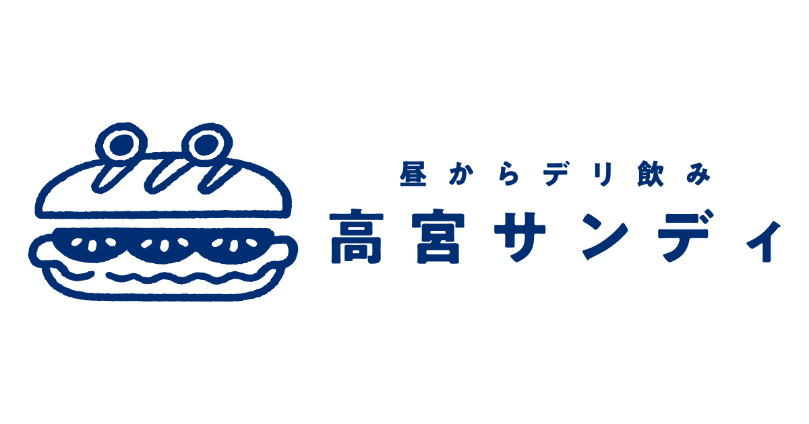

パン食べ放題でスタート
テーブルチャージ220円でパンが食べ放題。めんたいマヨ・燻製バター・バジル味噌など選べるディップで、まずは一杯のお供に。

立って、飲んで、
もっと自由に。
パン食べ放題 ／ ワイン6種 ／ 高宮駅1分
テーブルチャージ220円でパンが食べ放題。めんたいマヨ・燻製バター・バジル味噌など選べるディップで、まずは一杯のお供に。
白・赤・オレンジワインを常時6種ローテーション。600円〜で気軽に飲み比べ。惣菜との相性も抜群です。
イタリア産生ハム・ローストビーフ・アヒージョなど、ワインに合うおしゃれな惣菜を豊富にご用意。一品から気軽に注文できます。
テーブルチャージ220円に含まれる、サンディ名物のパン食べ放題。
3種のディップソースと合わせてどうぞ。
焼きたてのパンをお好きなだけ。ワインや惣菜と合わせて、ゆったりお楽しみください。
ふくやのめんたいマヨ／洋食屋の燻製バター／自家製バジル味噌。お好みで追加注文もできます（各150〜250円）。
お一人様220円のテーブルチャージでパン食べ放題が楽しめます。コスパ抜群の立ち飲みスタイル。
「高宮サンディ」は、高宮駅から徒歩1分の立ち飲みバーです。
ワインや惣菜をカジュアルに楽しめる、大人のための気軽な立ち飲み空間。パン食べ放題付きで、仕事帰りの一杯から週末のひとりがけまで、自分のペースで飲める場所を目指しています。
予約不要・当日ふらっと立ち寄れる、高宮のあたらしいスタンディングバーです。
白・赤・オレンジのワインを常時6種ローテーション。
ビール・ウイスキー・焼酎・ソフトドリンクも揃っています。
白・赤・オレンジワインをグラスで600円〜。シャルドネ・ピノノワールなど品種もさまざま。惣菜と合わせて飲み比べを。
季節のスプリッツァー・グレープフルーツ・塩レモンなど、軽やかな一杯も揃っています。サッポロ黒ラベル・カールスバーグも。
ラフロイグ・マッカランなど個性派ウイスキーも。パンとの相性にこだわったどんぐり・杏子・クルミのミルク割も人気です。
立ち飲みスタイルで15席。全席禁煙の落ち着いた空間で、ひとりでも仲間とでも気軽に楽しめます。
予約不要なので、仕事帰りにふらっと一杯。週末のスタートに。高宮駅から徒歩1分の好立地で、いつでもお気軽にどうぞ。
営業は毎日15:00から。早い時間から立ち飲みできるのもサンディならでは。